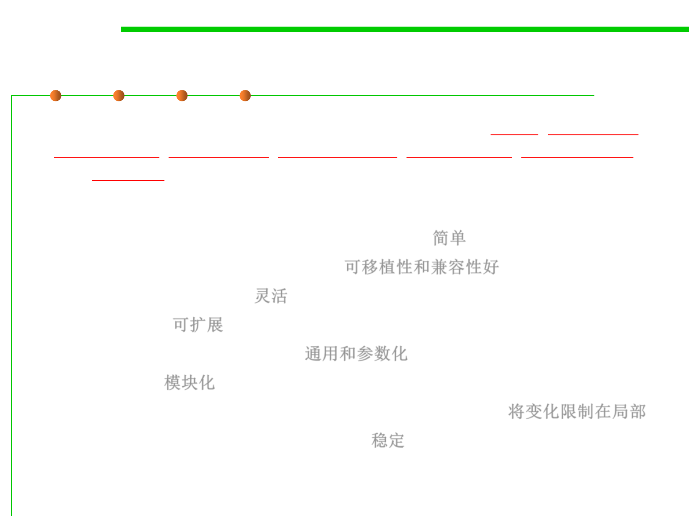

Reusability
5.1 Metrics, Morphology and External Observations of Reusability
▪ Reusability implies some explicit management of build, packaging,
distribution, installation, configuration, deployment, maintenance
and upgrade issues.
▪ A software asset with high reusability should:
– Brief (small size) and Simple (low complexity) 简单
– Portable and Standard Compliance 可移植性和兼容性好
– Adaptable and Flexible 灵活
– Extensibility 可扩展
– Generic and Parameterization 通用和参数化
– Modularity 模块化
– Localization of volatile (changeable) design assumptions 将变化限制在局部
– Stability under changing requirements 稳定